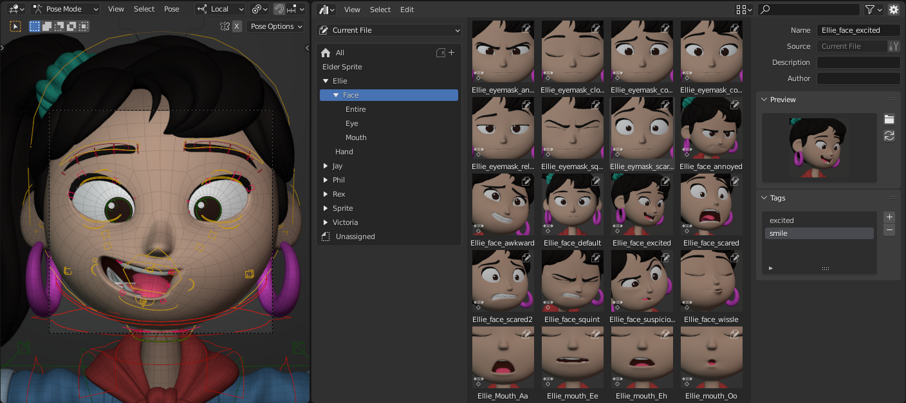
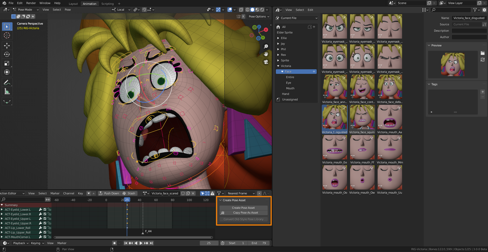
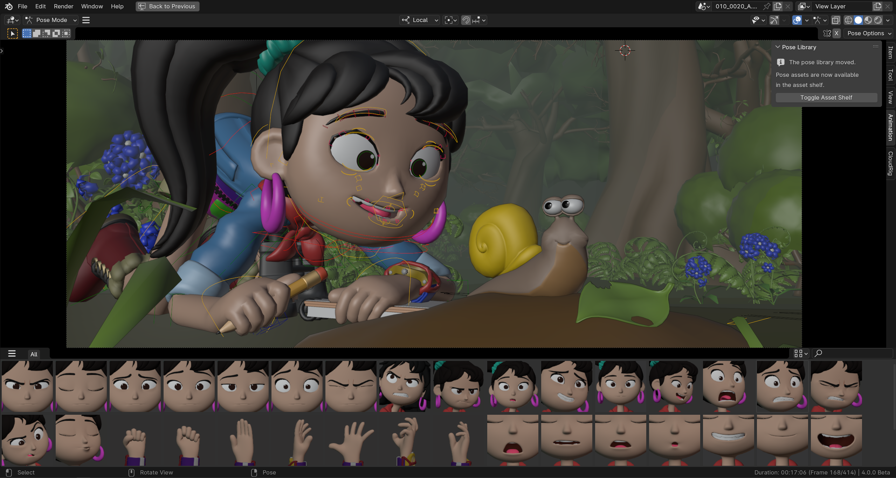

Pose Library¶
Phần này mô tả pose library, vốn dựa trên Asset Browser. Để có cái nhìn tổng quan về hệ thống asset, xem phần Thư viện Asset. Pose library được thiết kế để dùng trong Pose Mode. Nói cách khác, nó chỉ hoạt động khi tạo pose cho một armature, chứ không dùng cho animation object nói chung.
Ghi chú
Pose library được triển khai dưới dạng một add-on. Add-on này được bật theo mặc định; tắt nó sẽ loại bỏ pose library khỏi giao diện người dùng của Blender.
Các "khối xây dựng" của pose library thực ra được triển khai ngay trong Blender. Add-on chỉ chứa giao diện người dùng và logic quyết định những gì được lưu trong một pose asset. Phần này được cố ý đặt vào một add-on, để các artist hoặc studio muốn thay đổi hành vi có thể làm điều đó bằng một add-on của riêng mình.
Pose Asset là gì?¶
Một pose asset là một action đã được đánh dấu là asset, và chứa dữ liệu đúng một frame animation. Thông thường chúng được tạo qua nút Create Pose Asset (xem bên dưới), nhưng bất kỳ action nào được key đúng trên một frame đều có thể được xem là pose asset.
Mỗi pose trong library được lưu trong data-block action riêng của nó. Điều này có nghĩa là nó có thể có tên riêng, ảnh xem trước riêng, và có thể được tổ chức trong Asset Catalog.
Vì pose asset thực chất chỉ là một action, nó cũng có thể chứa các slot. Điều đó có nghĩa là một pose asset duy nhất có thể chứa pose cho nhiều hơn một armature. Khi áp dụng pose, slot khớp tốt nhất với armature đã cho sẽ được chọn để đọc pose từ đó. Nếu không tìm được sự khớp tốt, nó sẽ quay về slot đầu tiên. Đối với các pose asset tổng quát, khuyến nghị dùng action có một slot. Nhờ đó Blender luôn dùng slot đầu tiên (và duy nhất), bất kể pose được áp cho nhân vật nào. Nếu một pose dành riêng cho hai nhân vật trở lên, chúng có thể được lưu trong cùng một asset cho tiện. Để biết cách tạo các pose asset đa nhân vật như vậy, xem Pose Creation.
Tạo Pose Library¶
Một pose library là một tập hợp các action tồn tại trong các blend-file của một Asset Library. Các blend-file như vậy có thể được tạo thủ công, hoặc bằng cách xuất pose sang một library. Nếu một pose asset được tạo bằng cách xuất sang library, một file .asset.blend sẽ được tạo cho nó, file này sẽ chỉ chứa đúng một asset đó, và không thể được mở như một blend file thông thường để chỉnh sửa. Ngoài ra không có hạn chế nào về số lượng pose asset có thể chứa trong một blend-file. Cũng có thể link một nhân vật, đạo cụ (props), v.v. vào trong, từ đó không chỉ dùng để tạo pose mà còn để render ảnh xem trước.

Ví dụ pose library của nhân vật Ellie trong Sprite Fright.¶
Tạo Pose¶
Để tạo một pose trong library từ Action Editor, tạo pose cho nhân vật, chọn các bone liên quan, rồi nhấp nút Create Pose Asset. Tùy chọn tương tự cũng có sẵn trong 3D Viewport khi ở Pose Mode, dưới menu Pose. Thao tác này sẽ tạo action pose mới, trong đó chứa các key cho giá trị hiện tại của vị trí, độ xoay, tỷ lệ, và các thuộc tính Bendy Bone của từng bone. Nhân vật có được animate hay không không quan trọng, nên bạn có thể dễ dàng tạo pose asset từ animation có sẵn. Bạn thậm chí có thể tạo một pose asset chứa bone của hai hay nhiều armature khác nhau. Để làm vậy, đưa các armature vào pose mode và chọn các bone bạn muốn thêm vào asset. Nhấp nút Create Pose Asset khi đó vẫn sẽ tạo một action duy nhất, nhưng với các slot riêng cho từng armature.

Để tạo một pose asset mới, hãy dùng nút Create Pose Asset trong Action editor.¶
Nếu library "Current File" được chọn, action sẽ được tạo trong blend file hiện tại và đánh dấu là Asset. Nếu một library khác được chọn, pose sẽ được trích xuất và một file .asset.blend mới chứa action đó sẽ được tạo.
Trong trường hợp pose asset đã được tạo trong file hiện tại, nó có thể được đổi tên trong Asset Browser. Ở đó bạn cũng có thể nhấp chuột phải vào ảnh thu nhỏ, rồi chọn Assign Action để gán action cho Object active (xem mô tả ở trên).
Ghi chú
Nút Create Pose Asset tạo một asset mới. Để đảm bảo điều này thực sự hiển thị trong giao diện người dùng, để bạn biết rằng đã có gì đó xảy ra, nó sẽ cố đảm bảo Asset Shelf hiển thị trong 3D Viewport.
Tạo Pose bằng cách Sao chép từ File Khác¶
Như đã mô tả trong Giới hạn thiết kế, Blender chỉ ghi dữ liệu vào blend-file đang mở hoặc vào một file .asset.blend. Để sao chép một pose từ file khác vào một file pose library, xem các bước sau:
Tạo pose cho nhân vật và chọn các bone liên quan.
Nhấp nút Copy Pose as Asset, có sẵn trong Action Editor. Thao tác này sẽ tạo pose asset (bao gồm cả ảnh thu nhỏ của nó) và lưu nó vào một file tạm ở đâu đó.
Chọn một pose asset có sẵn, và mở menu ngữ cảnh của nó. Nhấp tùy chọn Open Blend File.
Một tiến trình Blender mới sẽ khởi động, và tự động mở file asset library chứa pose đã chọn. Nhân tiện, điều này hoạt động với mọi asset, không chỉ riêng pose!
Trong Asset Browser, nhấp nút Paste as New Asset. Thao tác này sẽ tải file tạm đó, và tải tất cả asset mà nó tìm thấy ở trong. Trong trường hợp của chúng ta, nó chỉ tìm thấy một pose duy nhất, nhưng các phiên bản Blender tương lai có thể mở rộng tính năng này cho các loại asset khác. Đây là lý do nút được đặt tên chung chung như vậy -- nó không dành riêng cho pose.
Đặt tên cho pose, và nếu muốn, nhấp nút "làm mới" trong panel ảnh xem trước để render ảnh xem trước mới.
Lưu file và thoát Blender.
Blender gốc vẫn đang chạy nền và nhận thấy Blender mới đã thoát. Nó tự động làm mới Asset Browser để hiển thị pose vừa thêm vào.
Điều khiển Hình dáng của Ảnh Xem Trước¶
Các ảnh xem trước của pose library được render bằng camera của Scene đang active. Cách tiếp cận này được ưu tiên hơn việc render một 3D Viewport cụ thể vì hai lý do chính:
Chỉ có một scene camera active tại mỗi thời điểm, giúp việc camera nào được dùng trở nên dễ dự đoán.
Camera, cũng như phần còn lại của scene, có thể được thiết lập riêng cho việc render các ảnh thu nhỏ. Các file pose library được thiết kế cho đúng mục đích đó: chứa các pose và render ảnh xem trước của chúng.
Các ảnh xem trước được render bằng Workbench Engine. Chuyển scene sang dùng nó làm render engine, bạn sẽ thấy nhiều tùy chọn để ảnh hưởng đến hình dáng. Chọn một pose asset và nhấn nút Generate Preview để render lại ảnh xem trước với các cài đặt hiện tại.
Bạn cũng có thể animate các cài đặt như render MatCap, vị trí đèn, và cường độ đèn, v.v. Hãy tận dụng điều này!
Chỉnh sửa Pose Asset¶
Một pose asset có thể được chỉnh sửa sau khi đã tạo. Điều này chỉ khả dụng cho các pose asset nằm trong file hiện tại hoặc đã được xuất ra một file .asset.blend. Để làm được điều đó, một operator đã được tạo ra và có thể truy cập bằng cách nhấp chuột phải vào một pose asset. Operator đó hoạt động trên object active, nên việc cập nhật asset từ các bone được chọn của nhiều armature sẽ không hoạt động. Nó sẽ tìm slot khớp tốt nhất, nếu không có thì quay về slot đầu tiên. Có 4 chế độ.
- Adjust Pose
Cập nhật các channel hiện có trong pose asset từ các bone được chọn, nhưng không xóa hay thêm channel nào.
- Replace
Thay thế hoàn toàn tất cả channel trong pose asset bằng các channel của các bone được chọn.
- Add
Thêm các channel của các bone được chọn vào pose asset. Các channel đã có sẽ được cập nhật.
- Remove
Xóa các channel của các bone được chọn khỏi pose asset.
Sử dụng Pose Library¶
Pose library có thể được dùng để tạo pose cho một hoặc nhiều nhân vật. Vùng chọn bone hiện tại sẽ được dùng để xác định những bone nào được chỉnh sửa. Khi chỉnh sửa nhiều armature cùng lúc, một slot khớp của pose asset sẽ được xác định cho từng armature. Có thể áp dụng trọn vẹn một pose hoặc hòa trộn (blend) nó vào pose hiện tại của nhân vật một cách tương tác. Cách chính xác các thao tác này hoạt động phụ thuộc vào nơi bạn dùng chúng. Phần này sẽ giải thích cách dùng từ cả Asset Browser lẫn 3D Viewport.
Dùng từ Asset Browser¶
Pose library có thể được dùng trực tiếp từ Asset Browser. Các panel Pose Library sẽ xuất hiện khi object active là một armature và đang ở Pose Mode. Hệ thống catalog và thanh bộ lọc ở trên cùng có thể được dùng để tìm các pose cụ thể.
Các operator sau có thể được truy cập bằng RMB trên một pose:
- Apply Pose
Áp dụng pose lên nhân vật. Nếu có bất kỳ bone nào được chọn, pose sẽ chỉ được áp dụng cho những bone đó. Điều này giúp có thể tạo pose "súng ngón tay" bằng cách áp một pose nắm đấm cho bàn tay, rồi sau đó áp pose "bàn tay mở" chỉ cho ngón trỏ và ngón cái. Nhấp đúp vào một pose cũng sẽ áp dụng nó.
- Apply Pose Flipped
Sẽ đối xứng pose từ trái sang phải và ngược lại. Điều này giúp, ví dụ, có thể áp một pose bàn tay trái cho bàn tay phải, giảm số lượng pose bạn phải đưa vào library. Tất nhiên điều này cũng có thể được áp dụng cho các biểu cảm khuôn mặt bất đối xứng phụ thuộc vào góc camera. Trong khi hòa trộn (xem bên dưới), giữ Ctrl để hòa trộn pose đã đối xứng.
- Blend Pose
Cho phép bạn dần dần hòa trộn một pose từ library vào pose của nhân vật. Nhấp nút, rồi di chuột trái/phải để xác định mức hòa trộn mong muốn. Một pose asset có thể bị "trừ đi" trong khi hòa trộn. Kéo sang phải để hòa trộn như bình thường, kéo sang trái để trừ pose đi. Trong khi hòa trộn, bạn có thể dùng Tab để chuyển đổi giữa pose gốc và pose đã hòa trộn. Như thường lệ trong Blender, LMB hoặc nhấn Return để xác nhận; RMB hoặc nhấn Esc để hủy operator. Việc hòa trộn cũng có thể phóng đại một pose, bằng cách nhấn E (cho Extrapolate) và áp dụng pose với hơn 100%.
- Chọn/Bỏ chọn Pose Bone
Chọn hoặc bỏ chọn các bone được dùng trong pose. Điều này có thể được dùng để tạo một selection set, hoặc đơn giản là cho thấy bone nào là một phần của pose và bone nào không.
Dùng từ 3D Viewport¶

Pose library đang được dùng từ Asset Shelf.¶
Ghi chú
Pose library trước đây nằm trong Sidebar, ở trong panel Pose Library. Panel này vẫn tồn tại, nhưng giờ chỉ chứa một nút để mở asset shelf.
Trong 3D viewport, pose có thể được áp dụng nhanh chóng từ Asset Shelf. Ngược với Asset Browser, shelf cho phép bạn áp dụng pose nhanh hơn.
Nhấp vào một pose để áp dụng nó. Chỉ một lần nhấp là đủ. Bạn cũng có thể chọn và áp dụng pose bằng các phím mũi tên. Điều này cho phép khám phá nhanh các pose, để trực tiếp thấy kết quả trên nhân vật active.
Kéo ảnh thu nhỏ của pose từ trái sang phải để hòa trộn nó vào pose hiện tại của nhân vật. Chỉ cần nhả chuột để xác nhận.